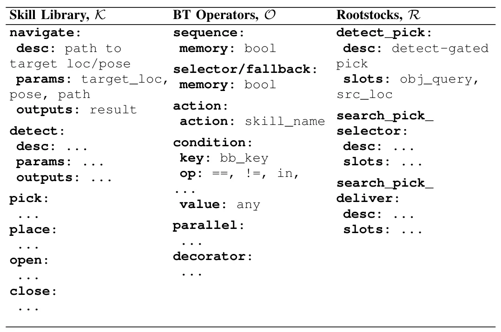
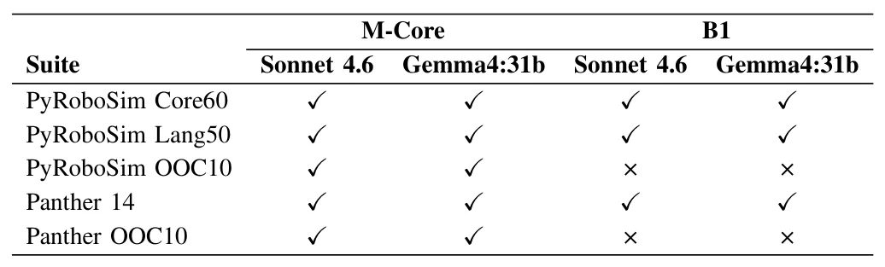
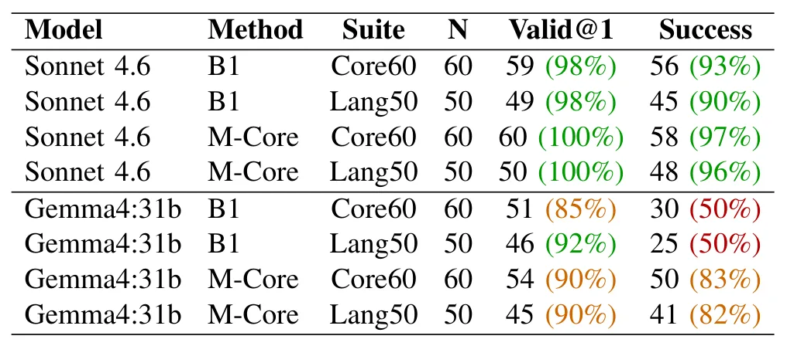
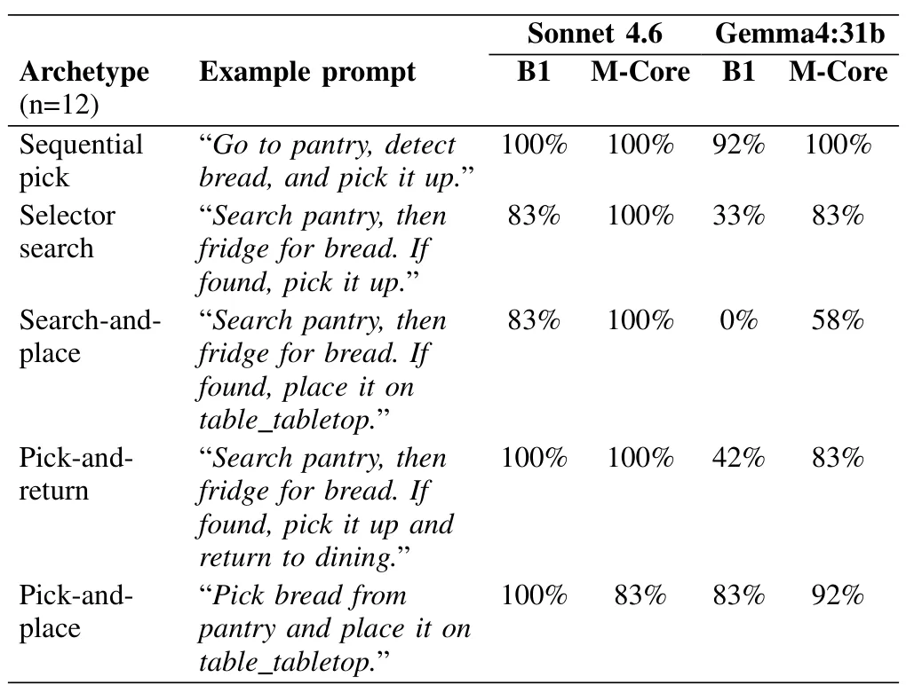
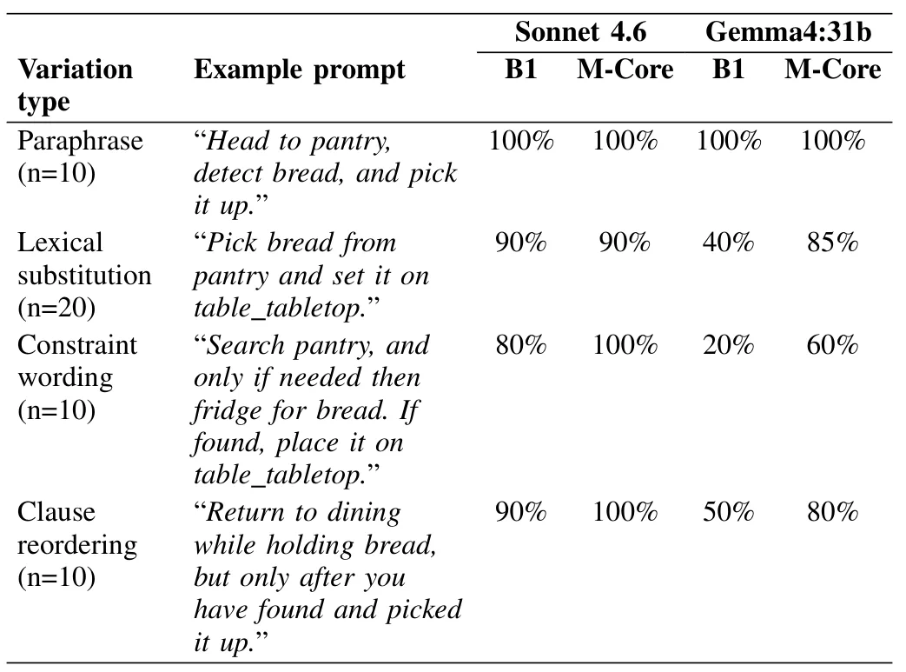
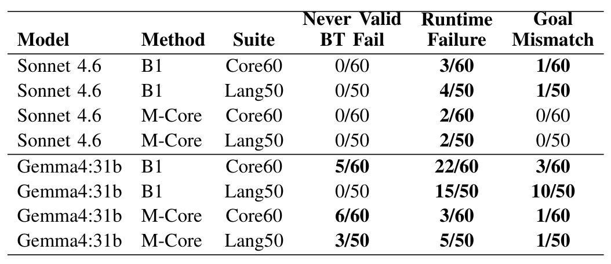

基于执行契约与 Coding Agent 的机器人行为树合成Contract-Grounded Behavior Tree Synthesis via Coding Agents
实机使用 Nav2，和自主导航任务编排、执行安全相关，但不是定位算法；值得关注契约是否能覆盖 SLAM 生命周期与恢复动作。
一句话工作总结
先从机器人运行时读取技能与行为树结构契约，再由 coding agent 合成并经验证门检查后执行。
摘要
本文提出 contract-grounded 行为树合成架构：coding agent 在生成行为树前，通过机器人侧 MCP server 查询可执行技能库、允许的行为树算子和可选组合模板；生成结果必须经过机器人运行时验证门才能执行。作者在 PyRoboSim 的 110 个模拟任务和 Husarion Panther 实机的 14 个 Nav2 任务上评估 Sonnet 4.6 与 Gemma4:31b，报告显式契约可获得近乎完美的行为树验证率，组合模板还能显著改善较小模型处理反应式控制流的成功率。
Synthesizing deployable robot behavior trees (BTs) from natural language (NL) requires grounding to ensure every generated BT references only skills a robot can actually execute. Existing LLM-based BT synthesis approaches often place this grounding responsibility on the prompt author. This makes deployment brittle when the author does not know which skills the robot can execute, how those skills are parameterized, or how the robot runtime software constrains valid BT structure. This paper proposes a contract-grounded BT synthesis architecture in which a coding agent queries a robot-side Model Context Protocol (MCP) server to retrieve an explicit contract consisting of a skill library, permitted BT operators, and optional BT composition templates, before synthesizing a BT for validation and execution. In our framework, non-expert operators issue NL commands without knowledge of robot implementation details, while a robot runtime validation gate enforces correctness before execution. We evaluate two LLMs, a closed model (Sonnet 4.6) and a smaller open-source model (Gemma4:31b), across 110 simulated tasks in PyRoboSim and 14 tasks on a physical Husarion Panther robot. Results show that contract grounding enables near-perfect BT validation and high task success, that BT composition templates substantially recover success on reactive control-flow tasks for the smaller model, and that the architecture transfers to physical hardware running a Nav2 stack opaque to both operator and agent.
中文解读摘录
- 作者：Jonathan Salfity, Robert Blake Anderson, Mitch Pryor
- 价值判断：生成行为树前先从机器人侧 MCP server 读取技能、算子和组合模板契约，再经运行时验证门执行，降低 LLM 产生不可执行机器人动作的风险。
- 关键结果：覆盖 PyRoboSim 110 项任务与 Husarion Panther 实机 14 项 Nav2 任务；显式契约达到近乎完美的 BT validation，小模型可由组合模板恢复反应式任务成功率。
- 后续核查：契约更新、失败恢复与异步动作语义，以及是否能安全覆盖 SLAM 启停、重定位和地图切换。
- 链接：arXiv · PDF
图表/页面预览

{kind=link}

{kind=link}

{kind=link}

{kind=link}

{kind=link}

{kind=link}
